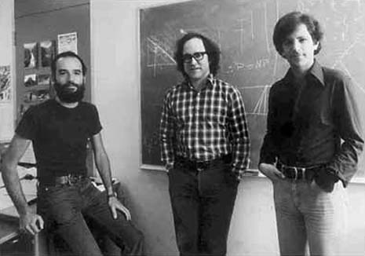

A bit of theory and history
RSA is the belongs to the family of asymetric cryptography system with public keys. It is one of the first ciphers of that kind and one of the most popular nowadays.. The authors of RSA cipher are Ron Rivesta, Adi Szamira and Leonard Adleman (it can be easily noticed that name RSA come from the first letters of surnames fo authors), they invented it in 1977. That universal cipher despite the message encryption found also usage in generating signatures. RSA provides confidentiality, integrity, authenticity and non-reputability of electronic communication and data storage.
RSA is using assymetric keys which means that we have got pair of different keys which are however strictly linked with each other. You can find more information about theory about crygraphy sytems with assymetric keys there.there
Perfect cipher?
What is the reaseon of the popularity of RSA system. RSA cryptosystem's security is conneted with difficulty od factoring really large integers which are product of two large prime numbers. Multipying such a numbers is quite easy task however determining the original prime numbers from factoring is really difficult even for today's super computers. The largest broken key til now was the 768 bit key. To broke the key it was used computer cluster. Nowadays the most popular keys are with 1024 or 2048 bit lenght. As the computional power of computers is growing year over year it is predicted that 1024 may be broke in the near future. That is why we are using 2048bit key the most often.
In the RSA key is always a pair numbers:
- (n, e) - for public key
- (n, d) - for private key
So how to generate both keys? At the beginning we need to choose two high primary numbers p and q The higher the numbers are the safer the encryptin become. It will be explained how lenght of these factors increases the safety in a moment.
The result of multiplication of p and q gives us the "n" factor. Now we have to only determine e and d. To make that we have to have result of Euler function of n:
omega(n) = (p-1)(q-1)
Now we are choosing e which have to be coprime number with n.
At at the end we are looking for d. To determine it we nee to use Extended Euclidean algorithm.
Example:
Where is used?